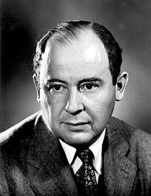

Neumann János munkássága
Neumann János élete

Margittai Neumann János (külföldön: John von Neumann, született: Neumann János Lajos) (Budapest, Lipótváros, 1903. december 28.[3] – Washington, 1957. február 8.) magyar születésű matematikus. Kvantummechanikai elméleti kutatásai mellett a digitális számítógép elvi alapjainak lefektetésével vált ismertté.
Családi gyökerek, kezdetek

- 1903. december 28-án született Neumann Miksa és Kann Margit első gyermekeként, zsidó származású családba Budapesten, az 5. kerület Báthory u. 26. számú házban. Jánosnak később két öccse is született: Mihály (1907) és Miklós (1911). Az édesapja Pécsről származott, és Budapesten ügyvédként dolgozott, aztán a Magyar Jelzálog- és Hitelbankhoz került először fő jogtanácsosi pozícióba, majd pedig a bank igazgatói székébe. János édesanyja, Margit a háztartást vezette és fiai nevelésével foglalatoskodott.
- Neumann János atyja, Neumann Miksa, 1913. február 20-án magyar nemességet valamint a "margittai" nemesi előnevet szerezte meg adományként I. Ferenc József magyar királytól.Ilyen módon leszármazottjai jogosulttá váltak ennek a nemesi előnévnek a használatára. Fia, Neumann János így lett hivatalosan "margittai Neumann János", aki későbbi külföldi tartózkodása idején vette fel először a Johann von Neumann, majd később a John von Neumann nevet, a világ nagyobbik részén ma is így ismerik.
- A Neumann család ingergazdag szellemi légkört teremtett a gyermekek számára, a gyakori beszélgetések nem kizárólag tudományról zajlottak, nem volt ritka a zenei, színházi vagy irodalmi téma. A gyerekek már fiatalon németül és franciául is tanultak nevelőnőiktől. Ugyancsak mindennapos volt a vendégség a háznál, jöttek külföldiek és magyarok egyaránt. A hazai szellemi elit prominens képviselői is tiszteletüket tették Neumannéknál, például Ortvay Rudolf, a budapesti tudományegyetem elméleti fizikai intézetének igazgatója és Fejér Lipót matematikaprofesszor.
- János már korán kortársait jóval meghaladó képességekről tett tanúbizonyságot. Magyar anyanyelve, a francia és a német nyelvek mellett tanulta a latint és az ógörögöt; emlékezőtehetsége szinte fotografikus volt, és fejszámolásban is rendkívüli eredményeket mutatott fel. Ez utóbbi képessége felnőttkorában szinte védjegyévé vált. Legenda járt arról, hogy a korai elektronikus számológépek számításait ő maga ellenőrizte fejben a gépekével azonos sebességgel. Hasonlóan legendás volt emlékezőtehetsége. Élete végéig görögül idézett Thuküdidészből, és franciául Voltaire-ből.
- 1935-ben Kövesi Mariettától, első feleségétől megszületett Marina (von Neumann Whitman) nevű lánya, aki híres közgazdász Amerikában. Miután elvált, 1938. november 17-én Budapesten, a Terézvárosban feleségül vette Dán Klárát, Dán Károly és Stadler Kamilla lányát.
Forrás hivatkozása:
Wikipedia : Neumann János